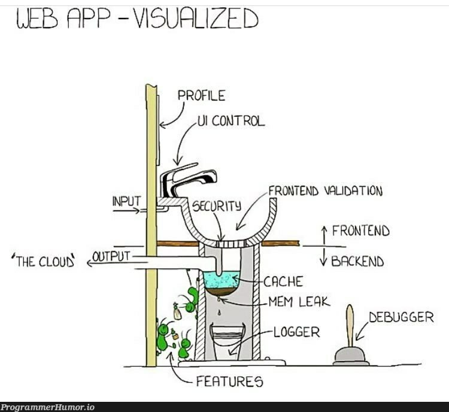

Vibe Coding Best Practices
2026-04-01
Vibe Coding
What is Vibe Coding?
Attribution: most of the discussions are based of Neal W. writing on Memberstack.
What is Vibe Coding?
- Key characteristics:
- Reduced manual coding: AI handles most of the code.
- Acceptance of AI output: Developers use AI-generated code, even if not fully understood.
- Iterative refinement: Describe goals, test, and provide feedback to improve results.
25% of Y Combinator Winter 2025 startups had codebases 95% AI-generated.
Vibe Coding vs. Traditional Coding
When to Use Vibe Coding
- Rapid Prototyping & MVPs: Build and test ideas quickly.
- Personal/Side Projects: Quick, disposable tools or experiments.
- Learning & Exploration: Try new tech or APIs with AI as your guide.
- Internal Tools: Fast utilities, dashboards, automations.
Vibe Coding vs. Traditional Coding
When Traditional Coding is Superior
- High-stakes, complex projects
- Applications requiring deep customization, optimal performance, and sophisticated architecture
- Performance-critical systems
- When every millisecond counts and resource optimization is paramount
- Security-sensitive applications
- Projects handling sensitive data, financial transactions, or requiring strict compliance
9 Essential Vibe Coding Best Practices
1. Start with Planning and Structure
- Create a detailed project plan (markdown, paper, etc.)
- Break into manageable sections/user stories
- Define clear criteria and track progress
- Review plan with AI for feedback
Without planning, AI can lead to scope creep and confusion.
1. Start with Planning and Structure

2. Effective Prompting and AI Guidance

2. Effective Prompting and AI Guidance
- Use specific, context-rich prompts
- Define AI’s expertise level
- Request plans and multiple options before coding
- Use AI as a Technology Consultant
- Set clear boundaries and constraints
Poor prompting leads to unpredictable, low-quality code.
3. Use Version Control and Testing
- Save work frequently (Git/GitHub)
- Test after every AI change
- Use descriptive commit messages
Skipping version control is risky—one bad AI suggestion can break everything.
4. Keep Your Tech Stack Simple
- Use mature, well-documented tech and frameworks (HTML, CSS, JS, React/Vue, Tailwind, PHP, …)
- Avoid complex backends, Multiple databases, or Cutting-edge technologies with limited AI training data
Simpler stacks reduce incompatibility and complexity.
5. Provide AI with Proper Context and Documentation

5. Provide AI with Proper Context and Documentation
- Share documentation, examples, and project rules
- Ask AI about its knowledge cutoffs
- Use a “context file” for consistency
Insufficient context leads to AI making wrong assumptions.
6. Break Tasks into Small Pieces

6. Break Tasks into Small Pieces
- Example Task Breakdown: Instead of “
Build a complete expense tracking application” you should feed the following piecemeal to the AI.- “Create a basic HTML structure with navigation”
- “Add a form for entering expense data with validation”
- “Implement local storage to save and retrieve expenses”
- “Create a list view showing saved expenses”
Large tasks lead to overengineered, hard-to-debug code.
7. Embrace Iterative Testing and Refinement

7. Embrace Iterative Testing and Refinement
Iterate: describe goal → generate code → test → give feedback → refine
Test on multiple browsers/devices
Give specific, actionable feedback
Iteration Process - Refining Your Prompts:
- Describe the Goal: Clearly explain what you want to achieve
- Generate Initial Code: Let AI create the first implementation
- Test Thoroughly: Run the code and identify issues or improvements
- Provide Specific Feedback: Tell AI exactly what needs to change
- Refine: Ask for targeted improvements rather than complete rewrites
Without iteration, subtle bugs and issues accumulate.
8. Handle Errors Systematically and Effectively

8. Handle Errors Systematically and Effectively
- Paste error messages into AI for diagnosis
- Request multiple hypotheses
- Reset to last working state if stuck
- Add logging and try different AI models
Without a system, debugging becomes frustrating and error-prone.
9. Prioritize Security

9. Prioritize Security
- Validate and sanitize inputs
- Never hardcode secrets
- Implement authentication/authorization
- Ask AI to review code for vulnerabilities
- Use HTTPS and proper error handling
Security vulnerabilities in AI-generated code are common and dangerous.
Conclusion
- Combine AI’s speed with human judgment and best practices
- Use planning, prompting, testing, and security as guardrails
- Vibe coding is powerful—use it wisely!